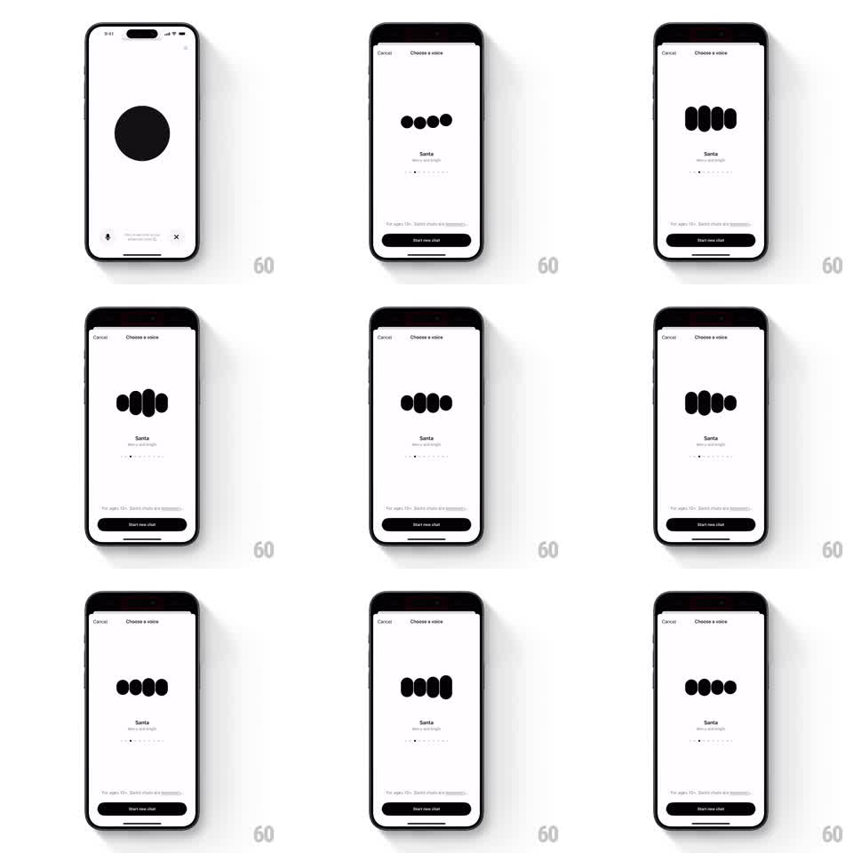

Media
Frame-by-frame

Rebuild this animation 1:1: ChatGPT's voice picker - a blob of four black rounded bars morphs and undulates like a living voice visualizer while the selected voice (Santa) plays, above a "Start new chat" button.

Rebuild this animation 1:1: ChatGPT's voice picker - a blob of four black rounded bars morphs and undulates like a living voice visualizer while the selected voice (Santa) plays, above a "Start new chat" button. ## Integration Integration: stack-agnostic spec - springs given as stiffness/damping, timed motions as duration + curve; map every value to your framework and animation library of choice. ## Scene A white "Choose a voice" sheet (Cancel at top left). Center stage: a cluster of four black rounded bars that continuously morph - stretching, squashing, and merging like liquid - reacting to the voice preview. Below: the voice name "Santa" with the tag "Warm and jolly", a row of page dots for swiping between voices, a legal footnote, and a full-width black "Start new chat" button. ## Motion spec Pattern: reactive morphing voice blob, audio-driven. - At rest, the four bars idle with a slow breathing morph (heights easing plus/minus 20 percent, 2s period, offset phases). - During the voice preview, the bars react to audio amplitude: each bar's height and width remap from live levels (attack 80ms, release 300ms), and adjacent bars bulge toward each other, edges staying perfectly rounded. - The morph is continuous and organic - bars momentarily merge into one blob on loud peaks, then separate. - Swiping to the next voice pages the name, tag, and dots (300ms slide) while the blob keeps moving uninterrupted. - On entry, the blob scales in from a single circle (spring stiffness 280 damping 20). ## Calibration - The bars never hard-stop; even silence reads as a calm swell, not frozen rectangles. - All motion stays inside the blob's area - the name, dots, and button never move with it. ## Reduced motion Bars show gentle static heights; no audio reactivity. ## Don't miss - Four bars, black on white, heavily rounded - the minimal ChatGPT voice mark. - The voice name and tag crossfade per voice; the blob itself never resets between voices.